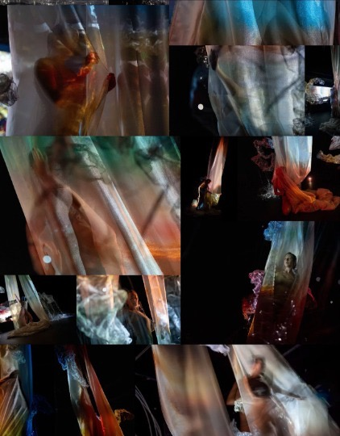
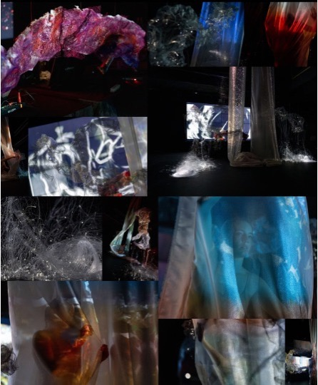
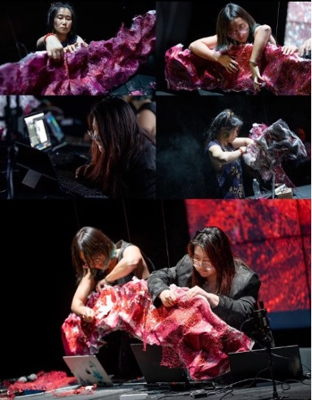

An expanded iteration of Peeling Cycle I, with sculptural and textile installation, choreographed movement, and projection mapping, by A Happy Mennn (AHM) — Anqi Liu, Han Zhang, and Mingyong Cheng.
Performed at Calit2, co-sponsored by the Qualcomm Institute and UC San Diego, May 2026.
This new iteration of Peeling Cycle expands the original work through sculptural and textile installation, choreographed movement, and projection mapping, deepening its immersive environment while extending the project's thematic exploration of embodied visibility, technological mediation, and material transformation.
Peeling Cycle examines how AI systems and regimes of visibility render Asian immigrant women artists legible through processes of detection, classification, translation, and misrecognition, while foregrounding the embodied acts of refusal, negotiation, and self-determination that challenge and reconfigure these forms of representation. For the full project description and technical approach, see Peeling Cycle I, from its premiere at the Every Woman Biennial, Pen & Brush Gallery, New York City.
Trailer (~3min):
Full performance documentation (~24min):
Also presented at: